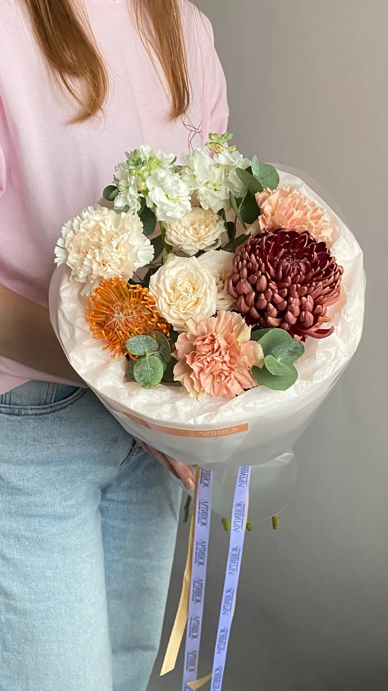
Нежный октябрь S
3 600 ₽
Цветочная мастерская · Новосибирск
Цветочная мастерская
Букеты для близких. Даже если вы далеко.
Заказать букет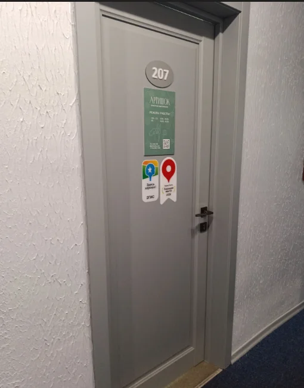
Ленина, 3
Гостиница «Центральная»
2 этаж, офис 207
Нежный, яркий или с осенним характером. Настоящие букеты и цены из каталога мастерской.

3 600 ₽
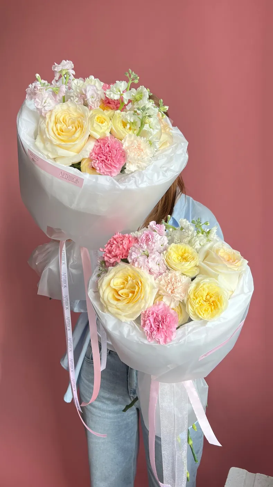
3 700 ₽
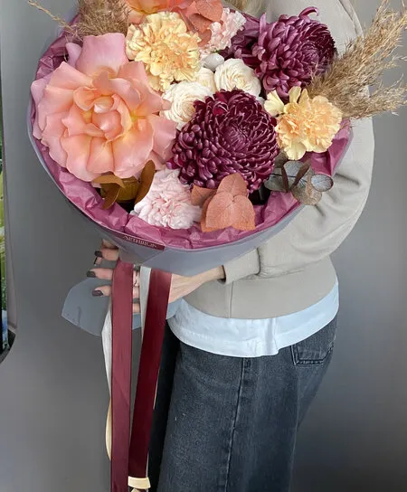
4 750 ₽
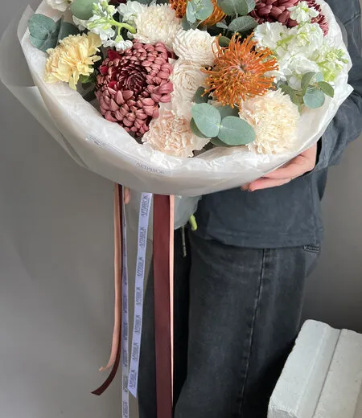
7 850 ₽
Цены из каталога Яндекс Карт на 7 ноября 2026 года. Наличие цветов, состав и стоимость доставки подтвердит флорист.
Посмотрите букеты или расскажите о поводе, получателе и вашем бюджете.
В Telegram или WhatsApp уточните наличие, состав, сумму и время получения.
Заберите букет на Ленина, 3 или согласуйте доставку по нужному адресу.
Розы, осенние оттенки и нежные сочетания. Настоящие работы из галереи мастерской «Артишок».
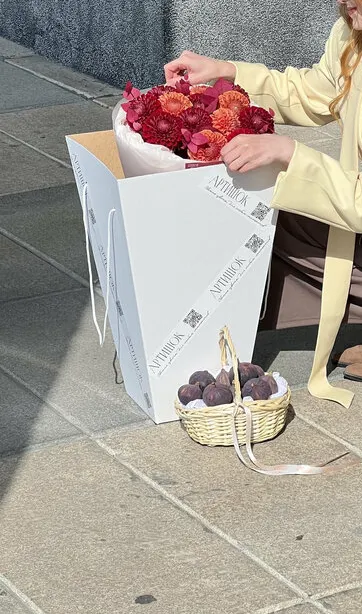
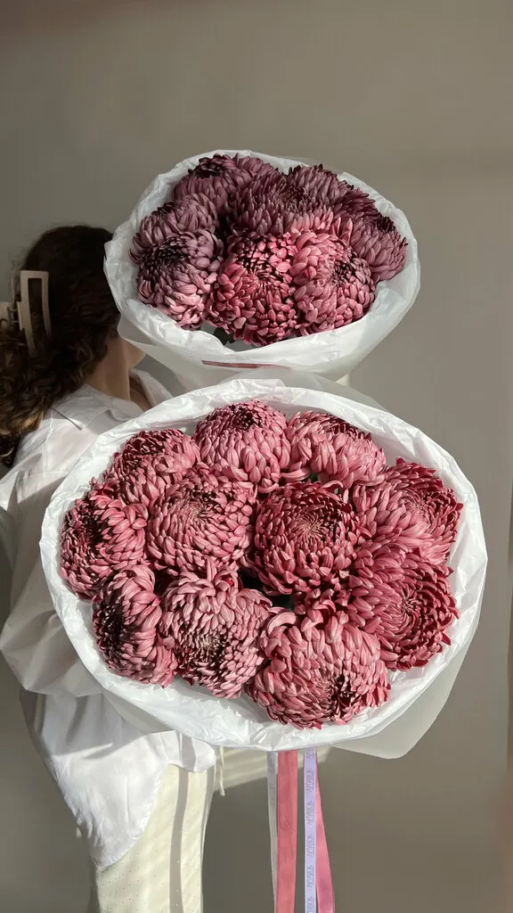
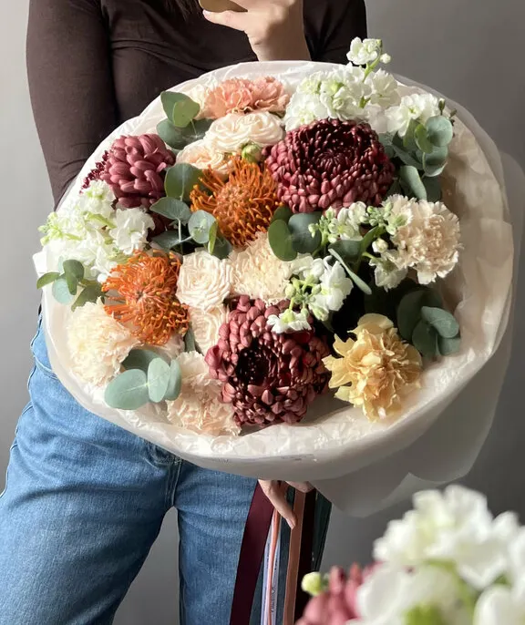
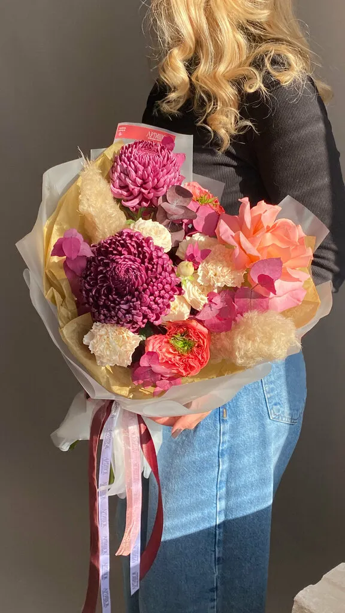
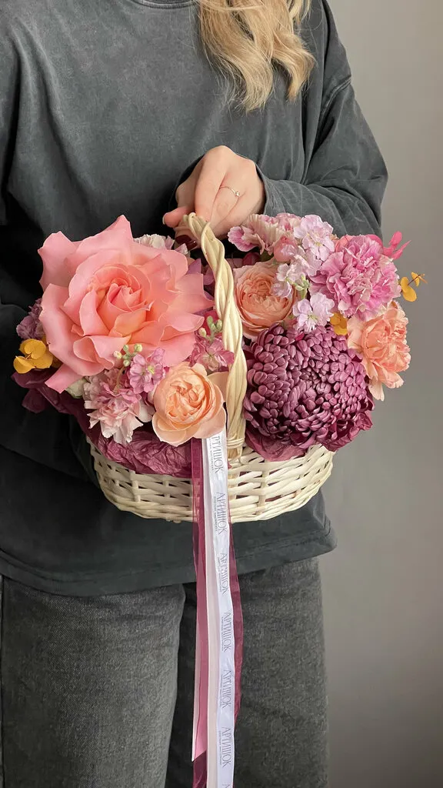
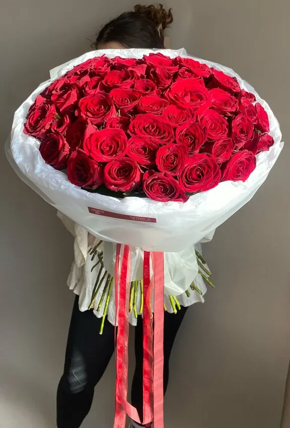
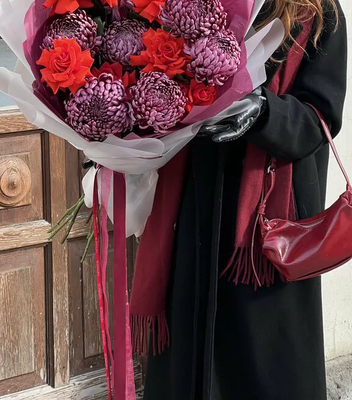
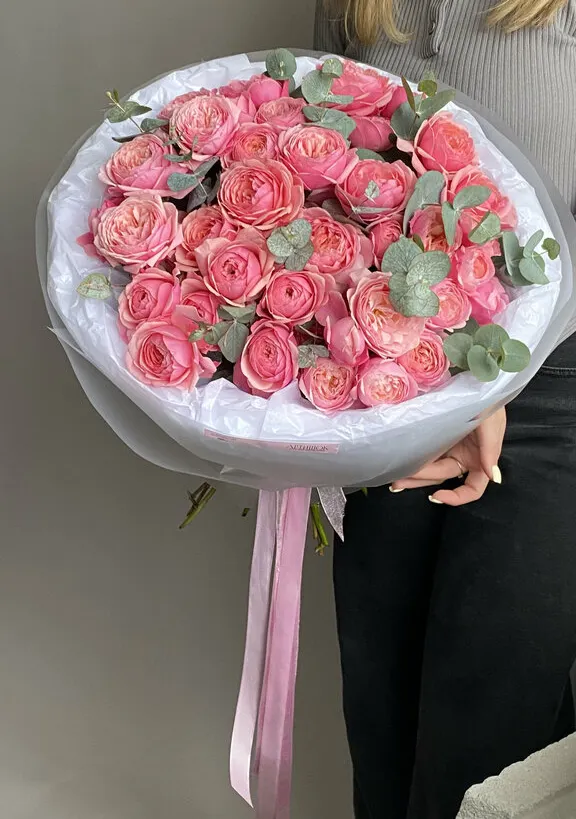
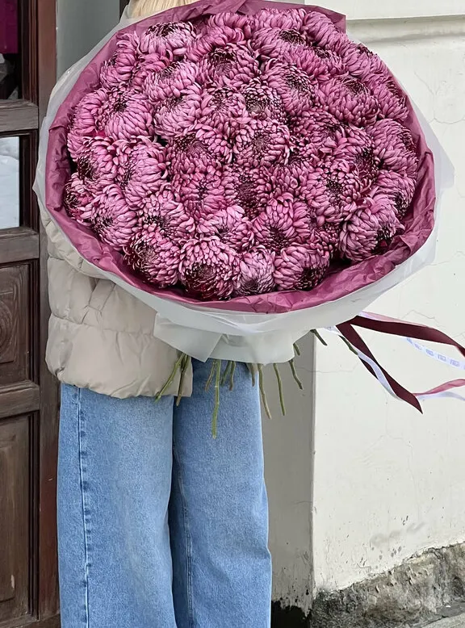
В отзывах клиенты рассказывают о дистанционных заказах. Обсудите букет с мастерской в мессенджере.
Мы в гостинице «Центральная», на втором этаже. Офис 207: именно эта дверь показана на первом экране.
«Безумно благодарен "Артишок" за уровень сервиса что они предоставляют. Очень отзывчивый персонал! Обращаюсь уже не первый раз. И всегда красота.Через Телеграм. Быстрое отвечают всегда всё по теме. Помогли в подборе подождали пока я определюсь. Безумно приятное тактичное общение. Шикарные цветы доставка без опоздания. Жена счастлива. Огромное спасибо за то что вы есть.»
Павел Фохт · 20.02.2026
«Уже несколько лет «Артишок» - это моя «палочка-выручалочка» на все праздники, мероприятия, события. Всегда уверена на 200% что выручат с любой задачей. Всегда свежие цветы, хороший ассортимент, на любой бюджет, стильное оформление, быстрая доставка!!! Всегда предложат добавить к букету открытку или сладкое. И что меня радует и удивляет каждый раз - напоминают о важных событиях и предлагают помочь с поздравлениями. Вот это - клиентоориентированность 🤍 Очень рекомендую эту прекрасную мастерскую!»
Nataliya Zaborovskaya · 02.10.2025
«С большим удовольствием обращаюсь в эту мастерскую. Здесь всегда можно найти самые свежие цветы, очень необычный ассортимент, со вкусом оставленные композиции. Очень отзывчивый персонал. Отлично отлажены дистанционный заказы и доставка. оставленные композиции. Букеты на для тех, кто оценит нестандартно сеть композиций и удивительно цветовую гамму. »
Елена К. · 09.01.2026
Отзывы с карточки на Яндекс.Картах, без правок.
Новосибирск, ул. Ленина, 3, гостиница «Центральная», 2 этаж, офис 207. На первом экране показана дверь мастерской, чтобы её было легче узнать.
Выберите букет в форме, укажите количество и способ получения. Кнопка WhatsApp откроет сообщение с вашим выбором; для Telegram текст копируется для вставки в чат.
В описаниях каталога указаны фирменная упаковка, открытка, средство для продления жизни цветов и памятка по уходу. Детали выбранного букета уточните при заказе.
Наличие цветов и итоговый состав подтверждает флорист. В каталоге мастерская предупреждает: сборный букет может отличаться в деталях.
Понедельник–суббота: 09:00–20:00, воскресенье: 10:00–18:00. Время готовности вашего букета согласуйте с флористом.